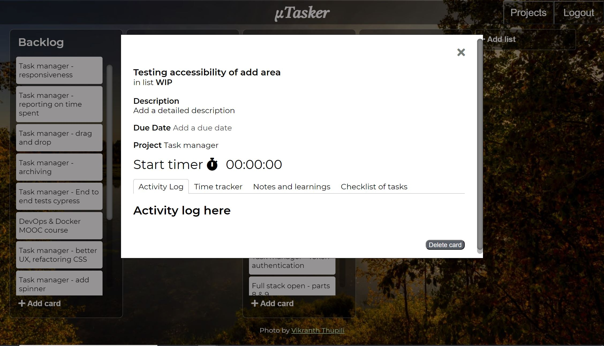
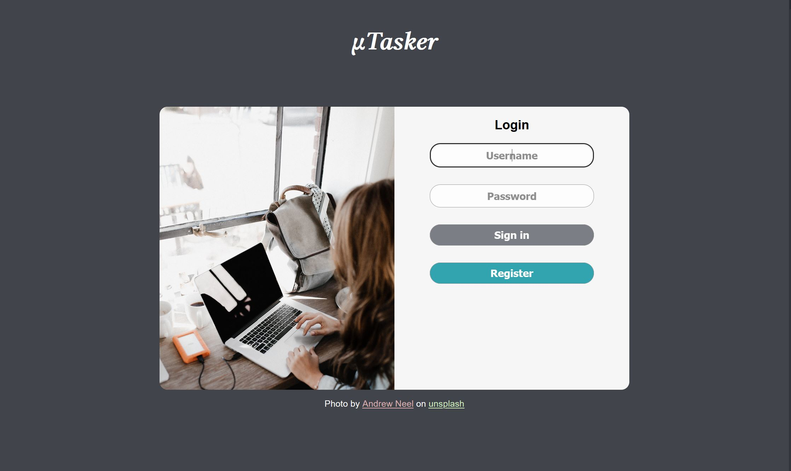
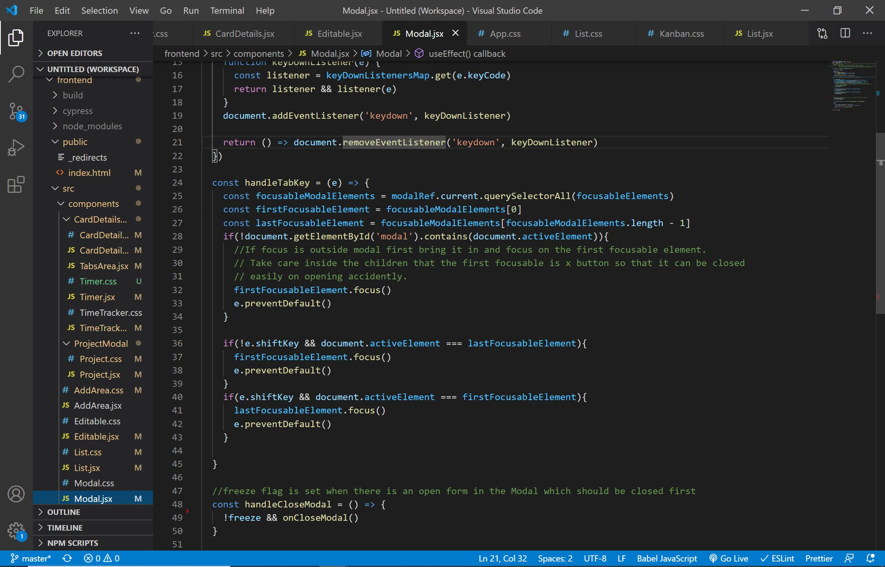
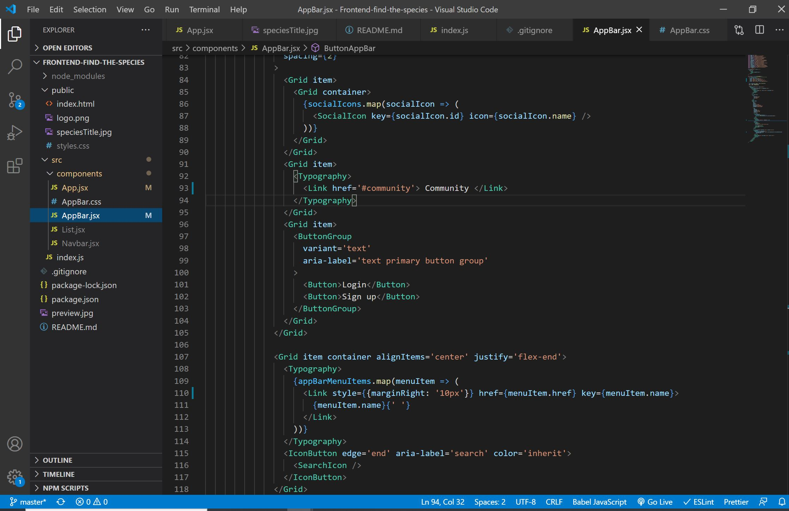

Micro Tasker
frontend backend siteProject status: Ongoing
Languages and frameworks: HTML5, CSS3, ReactJs, NodeJs, MongoDB
What is it?
The micro tasker is a personal task micro manager to help track your daily tasks. It combines the functionality of Trello and Clockify but at a very basic level. It is not as complex as either of these sites. It is meant for personal use.
Why am I building it?
I started working on this project at a Javascript react club organised by The Shortcut. The mentor at the club suggested that we build an app for task management as it is very easily scalable. This made a lot of sense to me, as at that time I was working on another project in which I was wasting a great deal of time deciding the requirements! When I began my career as a trainee in software I struggled a bit with estimation. To help deal with this, I decided to build this project with time tracking which will serve as a guide to estimating my work in the future.
What does it do?
The functionality built so far includes creating lists and cards and time tracking on the cards. Time tracked on the card can be viewed as a table. The cards can also be linked to a project and a report generated on the time spent on it. User authentication is also implemented. The timer can only run on one task at a time, if another is started the currently running task is stopped after confirmation.
What will it do in the future?
I am currently working on extending the project to display a graph of the project report. It will also include viewing tasks in the calendar (planned vs actual). In the calendar the user, would be able to select tasks from the existing cards, to help plan their work for a particular day. I will also be adding drag and drop functionality and improving the responsiveness and accessibility. I would like to add Redux to as state management has become a little complex and some data is re-fetched unneccesarily from the server. I would like to improve the UX, adding spinners etc. Adding notes with labels, and checklists on a task will also be possible in the future.
Lessons learned
This is the first big project I am building as a web developer. In my previous IT experience, it has always been with specific requirements, so that was a struggle. I wanted to build this one without frameworks like Material-UI and ReactStrap as I thought that this would give me an opportunity to learn React better. I found this to be true while building a reuseable Modal component. It was challenging for example to keep the focus inside the modal for keyboard users, and I had to take care of little things like freezing a modal when another is opened inside it or a field is being edited. I learnt how to manipulate the DOM in react using the useRef hook. Another challenge was building a reuseable Editable component. Its functionality is when a field is clicked on (or Enter for keyboard users), a textarea is displayed and can be edited. I learnt that it is possible to add event handling functions to react children while making this reuseable component.
Find the species
repo siteProject status: Ongoing (only Appbar is built so far)
Languages and frameworks: HTML5, CSS3, ReactJs, Material-UI
What is it?
It is as the name suggests an app to find and identify species in Finland. Birds, butterflies, spiders etc. Adding a description should return a result of possibilities.
Why am I building it?
It is like a pet project for me. I would love to have a site like this which will help me identify any species I see, even if I don't manage to capture an image. There are similar sites with listings but I haven't found a comprehensive one which easily helps identify any species. I can build parts of it like bird and butterfly identification by description but I have currently put this project on hold until I can find an API which returns pictures of all the birds or species. Finding and building, the data is the biggest road block for this. So I decided to park this for a while and used this project as an opportunity to practice Material-UI framework. I used it to build an AppBar.
Environmental awareness survey form
repo siteProject status: Completed
Languages: HTML5, CSS3, Javascript
What is it?
It is a survey form on Environmental awareness and veganism.
Why did I build this?
This was done as a part of the freecodecamp exercise. The exercise required bulding a form and I built one on Environmental awareness as this interests me. There is no backend, on submitting the form only a page redirect happens.
Lessons learned
I used this project to get some practice with vanilla Javascript.